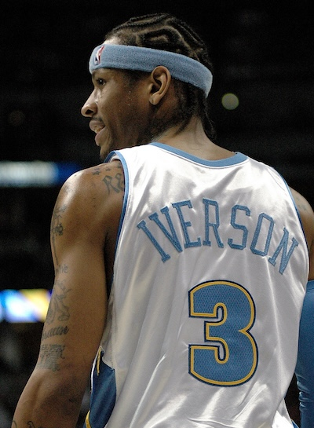

Images
What kind of photos are good to encode using JPEG?
What kind of photos are good to encode using GIF?
What is unique about the PNG format?
How do you resize your photo to the size it should be displayed?
Why should you resize photos using photo editing software instead of resizing it using CSS?
Answers
1. Great for detailed, full color photos.
2. Great for logos, icond, simple diagrams. and short looping animations.
3. PNG is lossless compression, transparency and keeps sharp edges and text clear.
4. Go to editor and resize.
5. Resizing in software improves performance and quality.